IN DEVELOPMENT · PROSPECTING TOOL
Web Seek
A prospecting tool for freelance web developers. It brings business discovery, saved leads, outreach notes, and follow-up status into one workspace.
CREATIVE SOFTWARE DEVELOPER
I came to software development through digital marketing and operations. Working on websites, campaigns, and e-commerce taught me to pay attention to where people get stuck. Today I bring that perspective to full-stack web apps.
SELECTED WORK
Tools for finding freelance leads, sharing music, and discovering what’s happening nearby.
IN DEVELOPMENT · PROSPECTING TOOL
A prospecting tool for freelance web developers. It brings business discovery, saved leads, outreach notes, and follow-up status into one workspace.
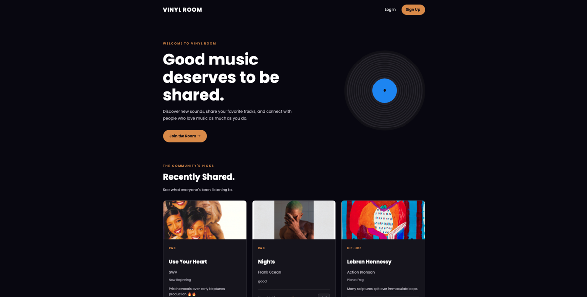
FULL-STACK APP
A place to share songs and discover what other people are listening to. Members can sign in, post recommendations, and upvote tracks. The Spotify Web API supplies album art when a track matches.
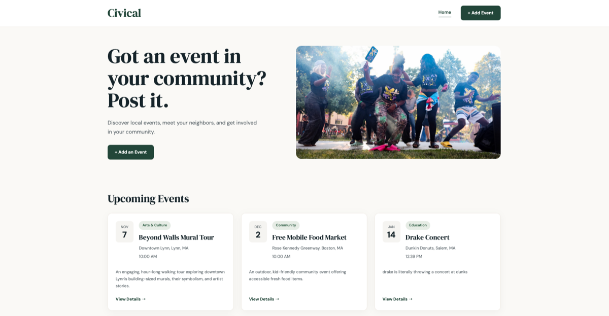
FULL-STACK APP
A community events board for browsing upcoming events by date. The app supports creating, viewing, editing, and deleting event listings.
 ↗
↗DIGITAL PRODUCT · THE FLYNN
Helped bring the Flynn’s digital playbill to audiences through InstantEncore, making program information easier to access and update.
View live platform ↗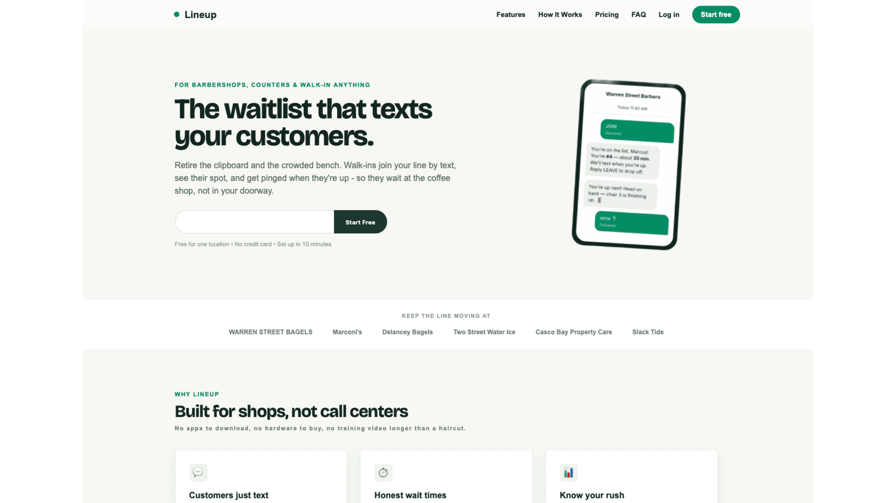
↗02
A digital waitlist concept for local businesses to manage walk-ins, wait times, and customer communication.
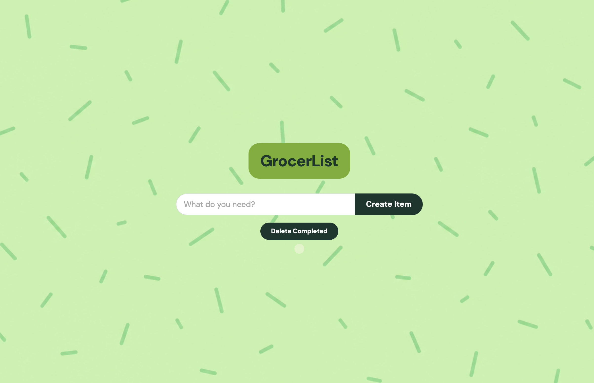
↗03
An interactive grocery list for adding, completing, and removing items.
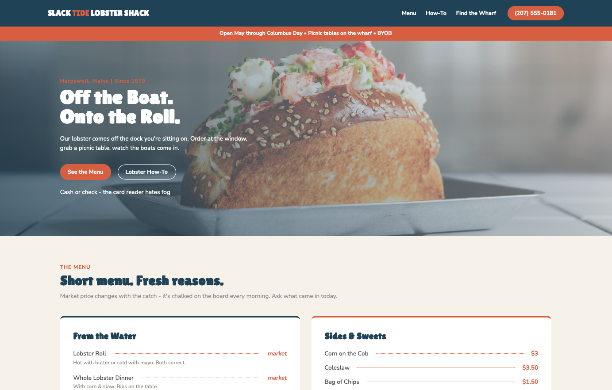
↗04
A responsive small-business website centered around menu discovery and location information.
 ↗
↗05
A service-focused website with clear business information and a customer contact flow.
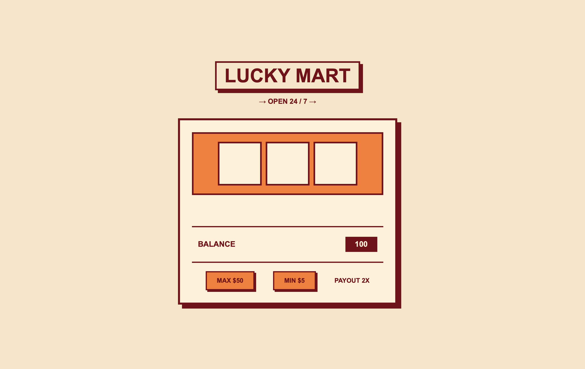
↗06
A corner-store-themed slot machine built to practice interactive JavaScript and game logic.
DIGITAL MARKETING
Before software engineering, I worked across SEO, e-commerce, digital campaigns, analytics, and community marketing. That background taught me to connect the experience on-screen with the people and business goals behind it.
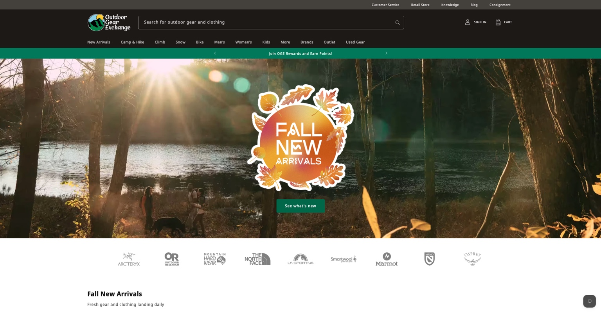
OUTDOOR GEAR EXCHANGE
I supported seasonal campaigns using Ahrefs and SEMrush to identify trending keywords and optimize product titles and descriptions around changing customer interests.
I tested messaging, product photography, and descriptions for audiences segmented by purchase history and location.
Conversion performance improved when campaign messaging and geographic targeting were more closely aligned with customer interests.
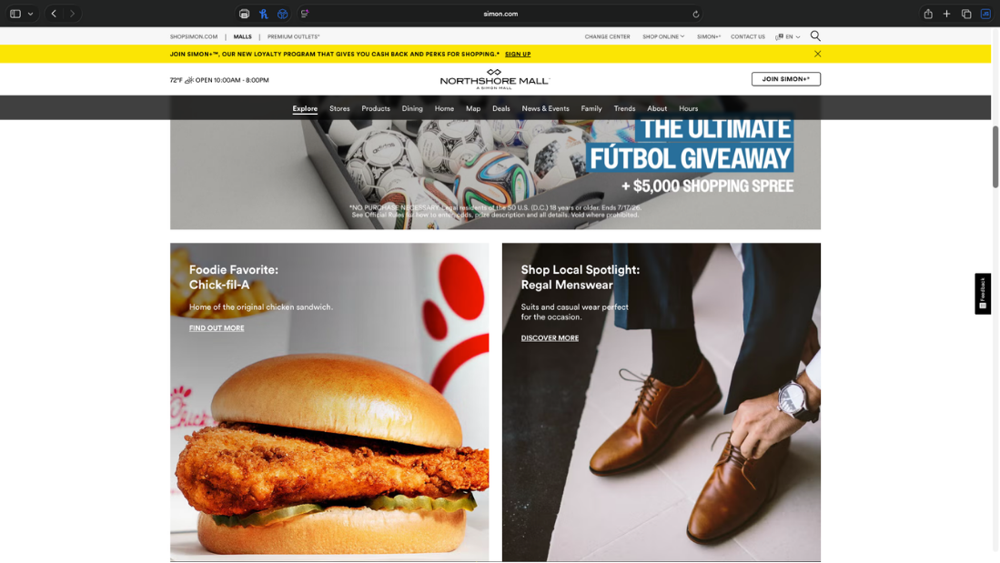
SIMON PROPERTY GROUP
I developed recurring retailer campaigns—including Foodie Favorites, Retailer of the Month, and Shop Local Spotlight—to increase discovery and keep shoppers engaged across social and web channels.
Top-performing content reached 20K+ views, and 26% of featured retailers reported increased customer traffic following their campaign.
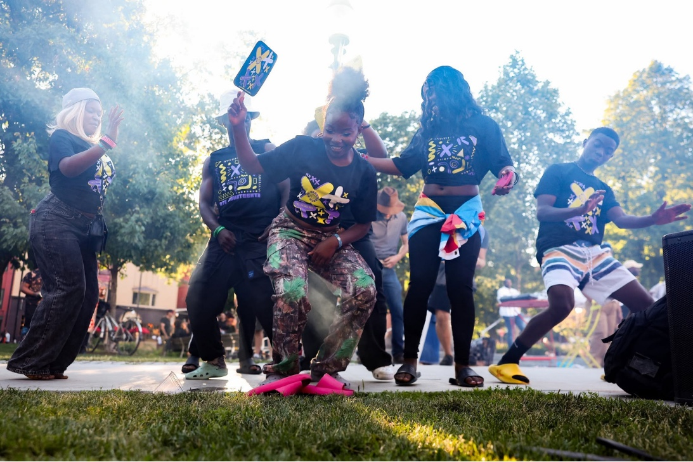
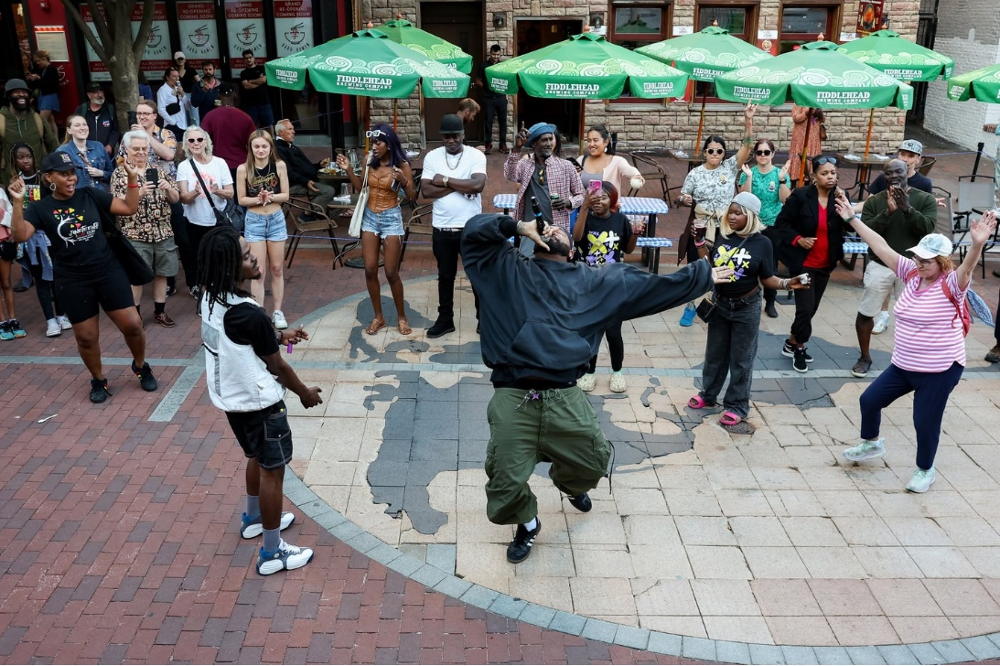
BURLINGTON JUNETEENTH
I supported marketing strategy and promotional efforts for Burlington’s Juneteenth celebration, bringing together audience outreach, sponsorship materials, community partners, performers, and social promotion.
The campaign also brought together 15+ vendors, 26 community partners, and coverage from two local media outlets.
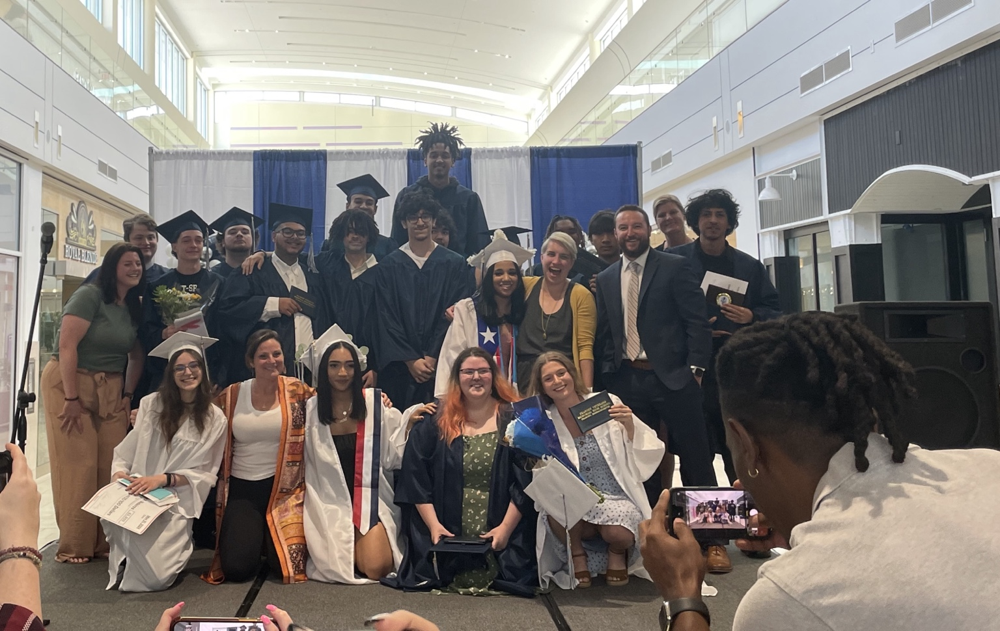
A LITTLE ABOUT ME
I worked across SEO, e-commerce, analytics, and community programming before moving into software development. That work taught me to start by asking who needs something, what they came to do, and what might get in their way.
I bring those questions into the apps I build today, from helping freelancers keep track of outreach to making it easier to find a local event.
LET’S CONNECT
Whether you’re growing your engineering team, building something interesting, or just want to talk technology, I’d love to connect.